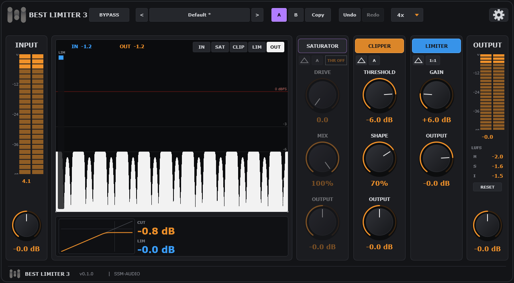

1. Установка
Закройте DAW и запустите установщик VST3. Откройте DAW, пересканируйте плагины и добавьте Best Limiter 3 на дорожку или шину. На Windows требуется 64-разрядный процессор с AVX2.
2. Клиппер
Уменьшите Threshold, пока на волне не появятся срезанные пики. Shape меняет мягкость среза. Delta позволяет услышать разницу.
3. Лимитер
Поднимите Gain и выставьте Output. Кнопка 1:1 компенсирует прибавку громкости для сравнения.
4. Сатуратор
Клиппер и лимитер бесплатны. Сатуратор открывается ключом за 500 ₽ на один компьютер, без пробного периода. Нажмите на секцию Saturator, введите почту покупки и ключ. Drive задаёт насыщение, Mix смешивает с исходным сигналом. Для переноса ключа выберите Deactivate Saturator on this computer в меню шестерёнки.
5. Сравнение
Переключайте A/B для сравнения настроек. Название модуля включает его, перетаскивание меняет порядок. Общий Bypass отключает обработку.